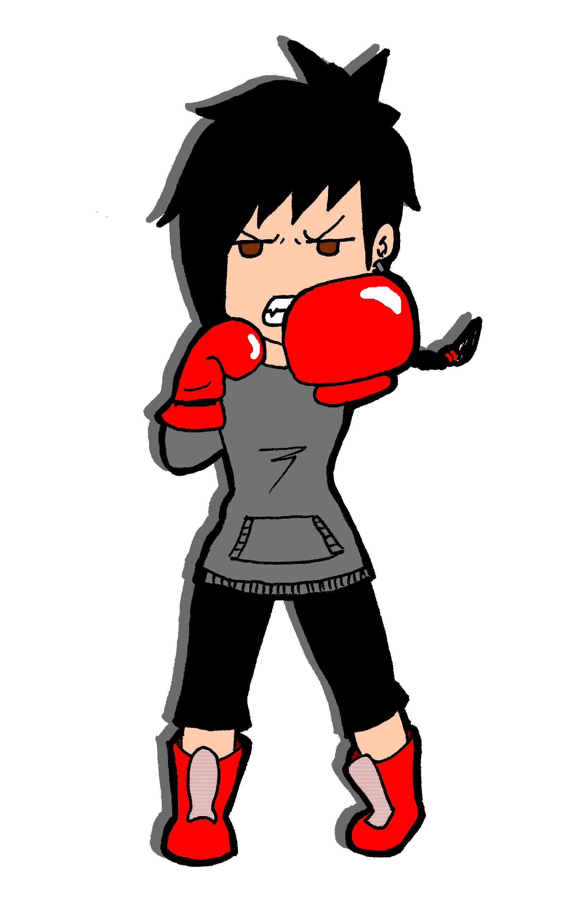
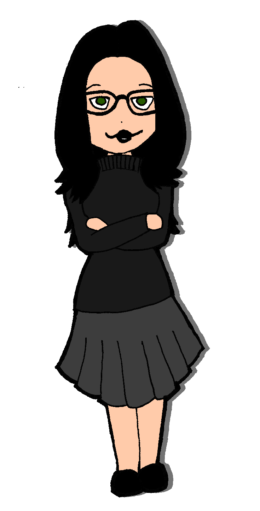
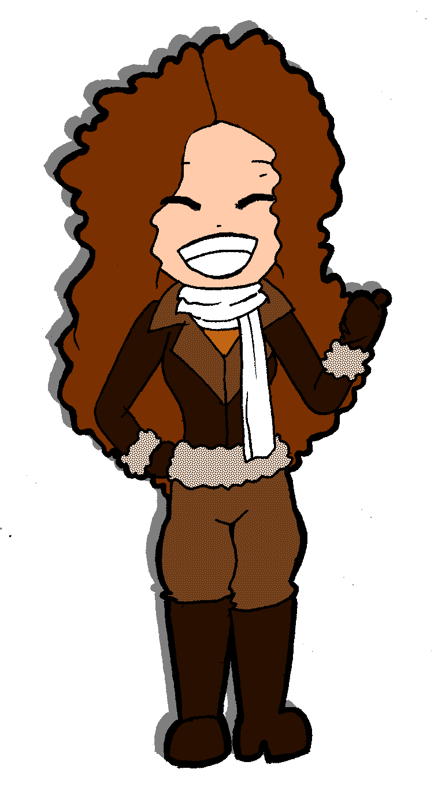
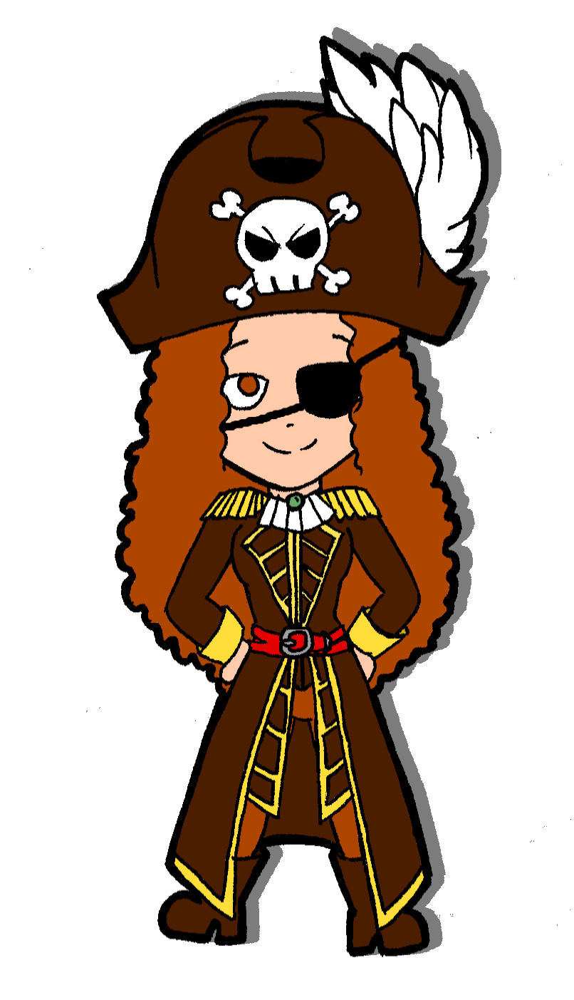

Biotube: ¿qué es eso? ¿Se come? ¡Hola! Si has llegado hasta aquí te estarás preguntando: ¿qué es BioTube? BioTube es un proyecto creado por un entusiasta grupo de bioquímicas con un único objetivo: llevar la ciencia desde los libros de texto hasta tu cabeza. ¡El concepto es muy sencillo! La gente tiene preguntas, un montón de preguntas. Y nosotras tenemos acceso a las respuestas. ¿Qué mejor que un pequeño vídeo de 2 minutos para ofrecértelas? Echando mano de animaciones, dibujos y un diálogo cuestionable, explicamos conceptos complejos de una manera sencilla y comprensible, un primer paso para aquellos que quieran saber más. Los temas que escogemos son preguntas del día a día, como por qué te crujen los nudillos o por qué ves chispitas si te aprietas muy fuerte los ojos (nada recomendable, por cierto). Únete a nosotras en un viaje por las pequeñas cosas de la vida. ¿Destino? ¡Aceptamos sugerencias!
¿Y quién está detrás de todo esto?  Nombre: Marta Labores: Dibujante y narradora, es la voz del canal. También escribe guiones y participa en la documentación de los vídeos. Le gusta: La ciencia, la música y los gatitos. Le disgusta: La homeopatía, los dulces con poco chocolate y los señores grandes que pasean perros muy pequeños. Color favorito: Negro. Una frase: "Somos el medio para que el cosmos se conozca a sí mismo." - Carl Sagan  Nombre: Yolanda Labores: Edición de vídeo y audio, animar cuando hace falta, escribir guiones. Es la encargada de que Marta diga sus frases sin parecer muerta por dentro. Le gusta: La ciencia, el cine y ser misteriosa. Le disgusta: Vestirse con cosas de colores. Color favorito: Negro. Una frase: "La intelectualidad se mide no por la inteligencia, sino por las dosis de humor que es capaz de utilizar." - Friedrich Nietzsche.  Nombre: Clara Labores: Animación, escribir guiones. Con animar ya tiene bastante, generalmente. Le gusta: La ciencia, las proteínas, los caballos y escalar sitios altos. Le disgusta: Las pizzas sin orégano. Color favorito: Verde. Una frase: "Los mejores educadores son los que inspiran a sus alumnos." - Neil DeGrasse Tyson.  Nombre: Elena Labores: Documentación, escribir guiones. Gracias a ella, nuestro canal tiene su sintonía particular. Le gusta: La ciencia, la música y su violonchelo. Le disgusta: El ruido. Color favorito: Marrón. Una frase: "La vida sin música sería un error." - Friedrich Nietzsche.